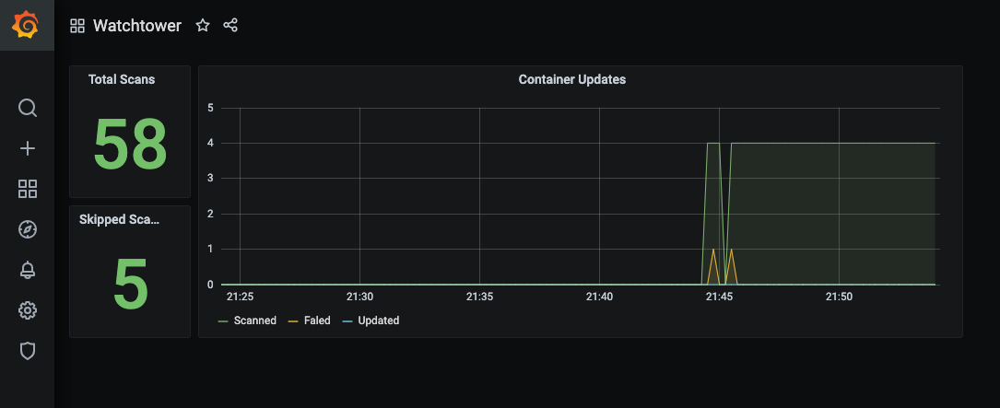

Metrics
Metrics let you track how Watchtower behaves over time — scan cadence, registry reliability, security-relevant events, and per-container watch status.
To use this feature, enable the metrics API,
set an API token (or opt out via
--http-api-metrics-no-auth for
trusted networks), and map port 8080 from the container.
The endpoint is GET /v1/metrics, served in Prometheus exposition format.
Scrape configuration¶
scrape_configs:
- job_name: watchtower
scrape_interval: 30s
metrics_path: /v1/metrics
bearer_token: demotoken
static_configs:
- targets:
- 'watchtower:8080'
Replace demotoken with the token you set via --http-api-token. Drop the
bearer_token line entirely if --http-api-metrics-no-auth is active.
For homelab cadences (polls every minutes-to-hours), scrape_interval: 30s
is plenty. Tighter intervals don't help because the underlying gauges only
change once per scan.
Available metrics¶
Grouped by what they tell you.
Scan cycle¶
| Metric | Type | What it tells you |
|---|---|---|
watchtower_scans_total |
counter | Poll cycles since the daemon started. rate() gives you scans-per-second. |
watchtower_scans_skipped |
counter | Cycles where another update was still in flight. Non-zero suggests an HTTP API request is racing the scheduler or the update is stuck. |
watchtower_containers_scanned |
gauge | Containers inspected during the last scan. |
watchtower_containers_updated |
gauge | Containers recreated during the last scan. |
watchtower_containers_failed |
gauge | Containers whose update failed during the last scan. |
watchtower_last_scan_timestamp_seconds |
gauge | Unix timestamp of the most recent completed scan. Pair with time() for staleness alerts. |
watchtower_poll_interval_seconds |
gauge | Configured cadence between scans, derived from the active schedule at startup. Scale alert thresholds by this instead of hardcoding a window. |
watchtower_poll_duration_seconds |
histogram | Wall-clock duration of each scan + update cycle. Buckets from 0.5s to 5m. Use histogram_quantile(0.95, ...) for p95. |
Watch status¶
Published every scan regardless of whether any audit flag is set.
| Metric | Type | What it tells you |
|---|---|---|
watchtower_containers_managed |
gauge | Containers with com.centurylinklabs.watchtower.enable=true. |
watchtower_containers_excluded |
gauge | Containers with com.centurylinklabs.watchtower.enable=false (intentional opt-out). |
watchtower_containers_unmanaged |
gauge | Containers with no enable label at all. Under --label-enable these are silently skipped — hit /v1/audit for names or enable --audit-unmanaged for log warnings. Excludes Docker-managed infrastructure (buildkit etc.), which is tracked separately in watchtower_containers_infrastructure. |
watchtower_containers_infrastructure |
gauge | Docker-managed scaffolding (moby/buildkit* image prefix, docker/desktop-* image prefix, com.docker.buildx.* / com.docker.desktop.* label prefixes). Not a user workload; tracked separately so transient builder containers don't show up as unmanaged noise. |
Update lifecycle¶
| Metric | Type | What it tells you |
|---|---|---|
watchtower_rollbacks_total |
counter | Rollbacks triggered by --health-check-gated. Each increment = a replacement container failed health check and the previous image was restored. |
watchtower_image_fallback_total |
counter | Times GetContainer fell back to inspecting by image reference because the source image ID was missing locally. Sustained counts indicate external tooling is deleting images Watchtower still needs. Background: upstream#1217. |
HTTP API (/v1/* endpoints)¶
| Metric | Labels | What it tells you |
|---|---|---|
watchtower_api_requests_total |
endpoint, status |
One counter per endpoint and response status code. A burst of status="401" on endpoint="/v1/update" is usually credential stuffing. |
Registry traffic¶
| Metric | Labels | What it tells you |
|---|---|---|
watchtower_registry_requests_total |
host, operation, outcome |
Outbound requests to registries. Operations are challenge, token, digest; outcomes are success, error, retried. |
watchtower_registry_retries_total |
host |
Bounded-backoff retry attempts. Zero is healthy; sustained non-zero means a flaky registry. |
watchtower_auth_cache_hits_total |
— | Bearer-token cache hits. High rate means the in-memory cache is sparing the oauth endpoint. |
watchtower_auth_cache_misses_total |
— | Cache misses — each miss triggers an oauth exchange. |
Docker daemon¶
| Metric | Labels | What it tells you |
|---|---|---|
watchtower_docker_api_errors_total |
operation |
Errors from the Docker engine API, broken down by operation. Operations: list, inspect, kill, start, create, remove, image_inspect, image_remove, image_pull, rename, network_connect, network_disconnect. Sustained non-zero rates usually mean socket permission issues or a daemon under load. |
Useful queries¶
Staleness: time() - watchtower_last_scan_timestamp_seconds — seconds since the last scan.
p95 scan duration: histogram_quantile(0.95, sum by (le) (rate(watchtower_poll_duration_seconds_bucket[5m]))).
Bearer-cache hit ratio: sum(increase(watchtower_auth_cache_hits_total[1h])) / clamp_min(sum(increase(watchtower_auth_cache_hits_total[1h])) + sum(increase(watchtower_auth_cache_misses_total[1h])), 1).
Unmanaged containers present for > 1 h: watchtower_containers_unmanaged > 0 with an alert for: 1h.
Dashboards and alerts¶
Ready-to-import Grafana dashboard and Prometheus alerting rules ship under
observability/
in the source tree. Dashboard covers the three rows above (overview, watch
status, reliability + security), plus three annotation tracks for rollbacks,
daemon restarts, and newly-appeared unmanaged containers.
Demo¶
The repository contains a demo with Prometheus and Grafana, available via
docker-compose.yml. This demo is preconfigured with the dashboard:
